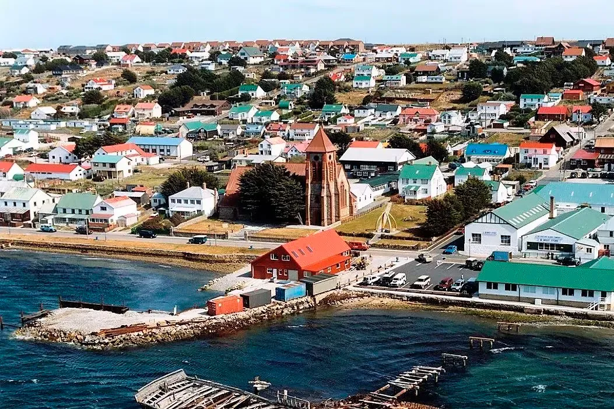
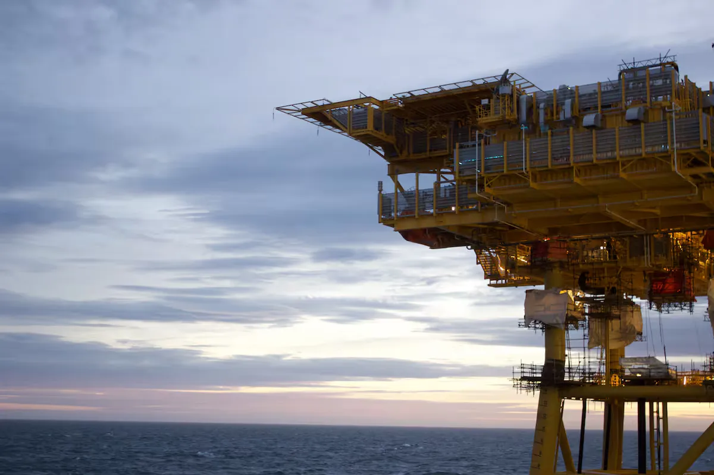

Reino Unido responde a Milei sobre as Malvinas
O discurso de Milei sobre as Malvinas provocou no Reino Unido uma rejeição oficial “inabalável”, um tombo nas ações das petrolíferas e uma tempestade midiática.

Malvinas — Relatório GLOBALpatagonia
BUENOS AIRES. Na quinta-feira, em um pronunciamento em cadeia nacional cercado por seu gabinete, o presidente argentino Javier Milei voltou a colocar as Malvinas no centro da agenda: assinou um decreto que amplia os recursos do Ministério da Defesa, anunciou a construção de uma base naval em Ushuaia e confirmou que as empresas com operações de hidrocarbonetos na plataforma continental em disputa ficarão excluídas do RIGI, o regime de incentivos para grandes investimentos. “Os ilhéus não têm direito à autodeterminação”, afirmou, na mesma linha em que também questionou o que classificou como “múltiplas crises de caráter migratório, demográfico e econômico” do Reino Unido. A primeira resposta oficial, do secretário de Defesa Wes Streeting, veio horas depois e foi taxativa: os ilhéus “escolhem ser britânicos” e o Reino Unido “não vai negociar a soberania”.
LONDRES. Mas a onda de choque do discurso ainda estava só começando. Nas horas seguintes, a reação se estendeu à política, aos mercados e à imprensa britânica como um todo: da resposta oficial, monolítica e previsível, a um tombo nas ações das petrolíferas que operam no arquipélago, passando por uma cobertura da imprensa que oscilou entre o sensacionalismo, o alarmismo e o ataque político ao governo trabalhista.

A resposta oficial: “Inabalável”
A posição do governo britânico não deixou espaço para nuances. O chanceler Ed Miliband, da ala esquerda do governo trabalhista de Andy Burnham, foi taxativo:
“A posição britânica sobre as Malvinas é inabalável. As ilhas são britânicas e continuarão sendo, porque é isso que os ilhéus querem. O direito à autodeterminação é inviolável, está fundamentado no direito internacional e vamos sustentá-lo.”
O ministro da Defesa, Wes Streeting, mais próximo da ala direita do partido, concordou no fundo, mas acrescentou uma leitura política:
“O discurso de Milei tem muito mais a ver com a política interna da Argentina do que com as Malvinas.”
Da oposição, a líder conservadora Kemi Badenoch, admiradora confessa de Margaret Thatcher assim como Milei, subiu o tom com um espírito mais confrontador:
“O Reino Unido não se curva a valentões. Se Milei quer um país forte, deveria reconstruir sua economia, não ameaçar os outros.”
O impacto nos mercados

Além das palavras, os mercados financeiros reagiram de imediato. Na bolsa de Tel Aviv, as ações da israelense Navitas Petroleum —que controla 65% da exploração na bacia norte das ilhas através de uma subsidiária no Reino Unido— caíram 4,5%. Em Londres, o tombo foi ainda mais acentuado: Rockhopper Exploration, dona dos 35% restantes, e Borders & Southern, que também opera na região, tiveram quedas de 15% cada uma.
A imprensa britânica: entre o alarmismo e a política interna
A cobertura da imprensa foi, como diz a própria análise, “curioser and curioser”, em uma referência a Alice no País das Maravilhas. O tom de entusiasmo que um dia despertou o Milei “fanático por Margaret Thatcher, simpatizante da autodeterminação dos ilhéus e amante da motosserra” deu lugar à indignação.
Os tabloides foram os mais virulentos:
A Sky News, de Rupert Murdoch, abriu com um alarmista “A Argentina vai invadir as ilhas de novo?”, acompanhado de imagens do discurso de Milei cercado por todo o seu gabinete, para depois vincular a escalada ao petróleo e à intervenção de Donald Trump.
O The Sun convocou seus leitores com a enquete do dia: “Precisamos ser muito mais duros na nossa rejeição à Argentina?”, oferecendo um vale de 100 libras entre os participantes.
O Daily Mail aproveitou o discurso para atacar o governo trabalhista: “A Argentina está apostando de novo nas Falklands porque o trabalhismo é fraco”, ecoando a reação do partido ultradireitista Reform UK, de Nigel Farage.
O Daily Express estampou que “as tensões explodem com a resposta do Reino Unido à ameaça bélica de Milei”.
Um trecho destacado pela maioria dos tabloides foi a passagem em que Milei fala das “múltiplas crises de caráter migratório, demográfico e econômico” que o Reino Unido enfrenta — um discurso que, paradoxalmente, sintoniza com a cobertura diária que esses mesmos veículos fazem do governo trabalhista.
Os veículos mais ponderados tentaram trazer bom senso:
A BBC colocou o foco na situação interna argentina e na incoerência entre a posição anterior de Milei sobre as ilhas e a atual, em um momento em que “sua popularidade está em queda livre”.
O The Guardian associou a guinada de Milei a uma pressão de Donald Trump, que “está de marcação cerrada com o governo trabalhista desde que Keir Starmer bancou o difícil na hora de dar todo o apoio militar que ele queria para sua aventura no Irã”. O jornal também lembrou que “Milei sempre se descreveu como um grande admirador de Margaret Thatcher” e que seu interesse pela soberania é “muito recente”, coincidindo com o momento em que os Estados Unidos começaram a reconsiderar sua posição.
O Daily Telegraph, por sua vez, se aproximou das posições de Nigel Farage e estampou, parafraseando Milei: “A Argentina vai prevalecer sobre uma Grã-Bretanha em decadência”, com um subtítulo destacando que o presidente argentino “diz que o Reino Unido é um país em crise ao anunciar planos de sancionar a exploração de petróleo nas Malvinas”.
Análise
A cobertura britânica reflete, no conjunto, uma leitura que prioriza a conjuntura política interna da Argentina —e as próprias disputas domésticas do Reino Unido— acima de uma preocupação genuína com o conflito de soberania. Como aponta a análise, as palavras de Milei e as dos jogadores argentinos após a Copa do Mundo podem ser parecidas, mas “seu significado foi radicalmente diferente”. Fica evidente que, para o establishment britânico, as Malvinas seguem sendo um tema encerrado, e qualquer revisão dessa posição é lida, antes de tudo, como um ato de política interna argentina.
Fontes: Sky News, The Sun, Daily Mail, Daily Express, BBC, The Guardian, The Daily Telegraph.